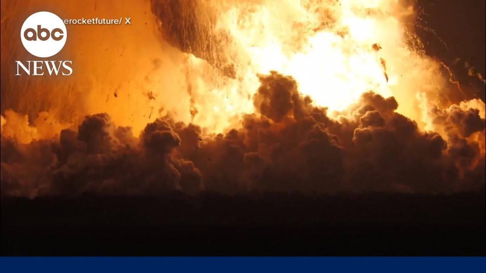

【SpaceX星舰在例行飞行前测试中爆炸】
Summary: The SpaceX Starship exploded during a routine pre-flight test in Texas, causing a massive fireball but no injuries.
摘要： SpaceX星舰在德克萨斯州的一次例行飞行前测试中爆炸，引发巨大火球，但未造成人员伤亡。

⏱️ Estimated Reading Time: 2 min
📚 六级生词 📚 雅思生词 📚 托福生词 📚 专八生词 📚 SAT生词 📚 考研生词 📚 GRE生词 📚 高考生词
The Space X explosion overnight.
SpaceX昨晚发生爆炸。
Rian Alley joins us with what happened at Starbase, Texas.
Rian Alley将为我们报道德克萨斯州Starbase发生的事件。
Rian, they're calling this a major anomaly.
Rian，他们称这是一次重大异常。
That's right, Michael.
没错，Michael。
Good morning to all of you.
大家早上好。
The SpaceX Starship was being filled with liquid oxygen and methane fuel when it exploded into a massive fireball.
SpaceX星舰在注入液氧和甲烷燃料时爆炸，形成巨大火球。
Overnight, a routine pre-flight test of SpaceX ship 36 ending in disaster.
昨晚，SpaceX 36号飞船的例行飞行前测试以灾难告终。
Ship 36 just blew up.
36号飞船刚刚爆炸了。
I mean, even the other day when they Whoa.
我是说，前几天他们还……哇。
Whoa.
哇。
Several smaller explosions heard in the wake as the flames and smoke filled the night sky.
随后听到几次较小的爆炸，火焰和烟雾弥漫夜空。
SpaceX was conducting their 10th test of the Starship at its Massie site in Starbase, Texas, when just after 11 p.m. local time.
SpaceX在德克萨斯州Starbase的Massie站点进行星舰的第10次测试，当时刚过当地时间晚上11点。
They were conducting a static fire test, which checks the engines while the rocket is grounded.
他们正在进行静态点火测试，即在火箭固定时检查发动机。
Fire department's inbound.
消防部门正在赶来。
Emergency responders racing to the scene.
应急人员正赶往现场。
According to SpaceX, the explosion was caused by a major anomaly while in the test stand.
据SpaceX称，爆炸是由测试台发生重大异常引起的。
The Axiom SpaceX 4 mission to the International Space Station, which was already delayed once, is scheduled to launch Sunday from the Kennedy Space Center in Florida.
Axiom SpaceX 4号前往国际空间站的任务已推迟过一次，计划于周日从佛罗里达州肯尼迪航天中心发射。
No word if that is still a go.
尚不清楚该任务是否仍会按计划进行。
SpaceX saying our Starbase team is actively working to safe the test site and the immediate surrounding area in conjunction with local officials.
SpaceX表示，其Starbase团队正与当地官员合作，积极确保测试场地及周边区域的安全。
Now, despite that shocking video, no one was injured as that area was already cleared out ahead of that test for safety.
尽管视频令人震惊，但无人受伤，因为测试前该区域已为安全疏散。
But it's not clear how much damage the actual facility has taken on.
但尚不清楚实际设施受损程度。
That's what they're going to be trying to figure out next.
这是他们接下来要弄清楚的问题。
No one was hurt.
无人受伤。
Thank you that video.
感谢这段视频。
Yeah.
是的。